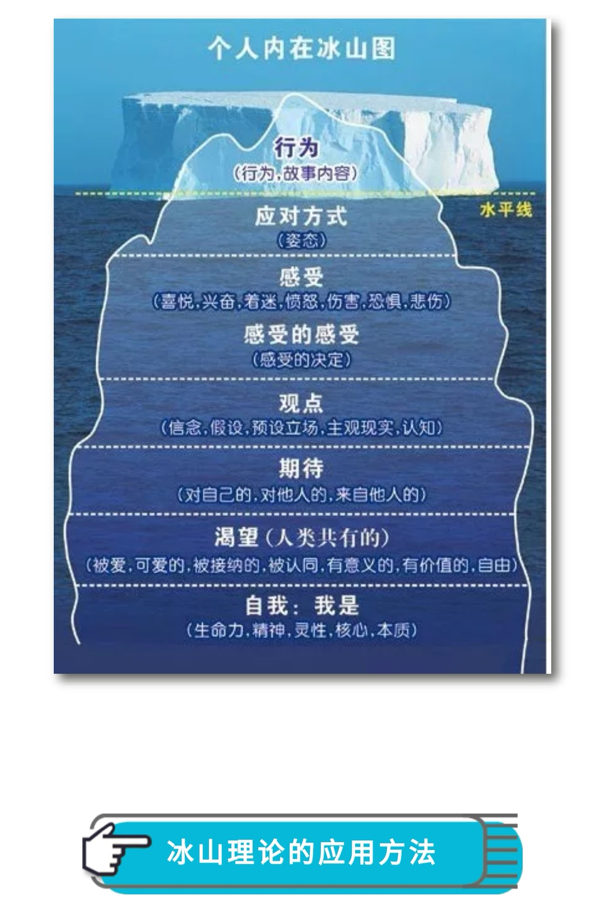

冰山理论¶

第一层，从女儿上小学开始，到现在为止，我看到她上学磨蹭呀，在家里不收拾吃过的果皮，食品包装，不及时完成作业等等这些小事情，我就会特别急，脾气特别大，这个就是行为(故事内容)。
第二层，我对这些行为的应对方式就是：催促，指责，愤怒的情绪。
第三步的感受是我特别生气，愤怒。当我批评孩子时，她的情绪也是对抗的，会导致我加重愤怒情绪，更加失去控制的，想让孩子按我的想法执行。
第四层就是我在心里会认为孩子不懂事，不体谅父母的辛苦，不孝顺父母等这些观念。
第五层，期待孩子能够自己妥妥当当安排好这些事情，认为孩子到了一定的年龄阶段，都应该做好应分的事情，不让父母操心。因为我在这个年龄段，这些事从不会让我的父母操心，并且可能干的更好。
第六层的是渴望，正是这一层使我觉知到了，我内心真正的渴望是想通过孩子必须成长得足够优秀已满足我被接纳，被认可的愿望。因为我小的时候缺乏关爱，缺乏接纳和认同，潜意识里中下这个意识，内心一直是缺乏力量，在后来的成长中，也没有让自己真正认可接纳自己。所以不自觉的想通过孩子来实现这个愿望。以前没有觉知到这个层面，只觉得可以感受到孩子有很多时间已经很努力，她也特别想让我开心，不想让我生气。可是生活中一点点小小的错误，或者是习惯不好，我都会大发雷霆，心里也明白其实不值得发火的，但就是控制不住自己。现在想想，孩子也很痛苦，感觉生活上总是达不到妈妈的要求。其实她也是非常渴望按她自己的意愿活着，而不是背负着小时候的妈妈。这也导致了，我很难走进孩子的内心，因为我所要求的不是孩子真正的自我，而是我的自我，所以总是不对频道。孩子也老是说我，你给的都不是我想要的，你说的都不是我想听的，你一点都不理解我，我很孤独。每次听到这儿，我总是感到无奈又心酸。
第七层从现在开始已经有了觉知，我的自我太弱小了，自己想要实现的东西，害怕自己得不到。所以我就要学会放下自己的负担，不要把自己的要求，强加给孩子，让孩子真正过她自己的内心想要的世界。我自己想要的，我要通过自己的努力去实现，通过自己不断的学习成长，去完善自己，表现优秀，得到别人的认可和接纳。